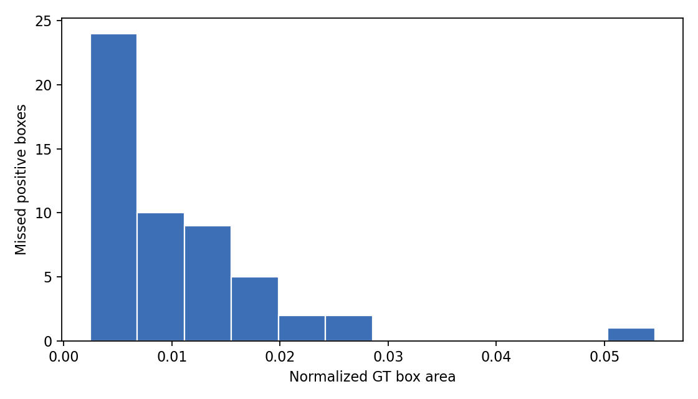

False Negative Analysis
Missed positive images at threshold 0.25. Red boxes are ground-truth positive regions missed by the detector.
FN images48
FN boxes53
Median box area0.008
Mean relative contrast1.079
Small boxes <2%48
Missed Box Area

FN Examples
.jpg) val_1 (1).jpg | max positive conf=0.055
val_1 (1).jpg | max positive conf=0.055
.jpg) val_1 (100).jpg | max positive conf=0.248
val_1 (100).jpg | max positive conf=0.248
.jpg) val_1 (102).jpg | max positive conf=0.146
val_1 (102).jpg | max positive conf=0.146
.jpg) val_1 (105).jpg | max positive conf=0.012
val_1 (105).jpg | max positive conf=0.012
.jpg) val_1 (110).jpg | max positive conf=0.161
val_1 (110).jpg | max positive conf=0.161
.jpg) val_1 (111).jpg | max positive conf=0.046
val_1 (111).jpg | max positive conf=0.046
.jpg) val_1 (117).jpg | max positive conf=0.224
val_1 (117).jpg | max positive conf=0.224
.jpg) val_1 (121).jpg | max positive conf=0.090
val_1 (121).jpg | max positive conf=0.090
.jpg) val_1 (136).jpg | max positive conf=0.045
val_1 (136).jpg | max positive conf=0.045
.jpg) val_1 (138).jpg | max positive conf=0.014
val_1 (138).jpg | max positive conf=0.014
.jpg) val_1 (140).jpg | max positive conf=0.011
val_1 (140).jpg | max positive conf=0.011
.jpg) val_1 (144).jpg | max positive conf=0.013
val_1 (144).jpg | max positive conf=0.013
.jpg) val_1 (145).jpg | max positive conf=0.060
val_1 (145).jpg | max positive conf=0.060
.jpg) val_1 (146).jpg | max positive conf=0.164
val_1 (146).jpg | max positive conf=0.164
.jpg) val_1 (151).jpg | max positive conf=0.097
val_1 (151).jpg | max positive conf=0.097
.jpg) val_1 (152).jpg | max positive conf=0.136
val_1 (152).jpg | max positive conf=0.136